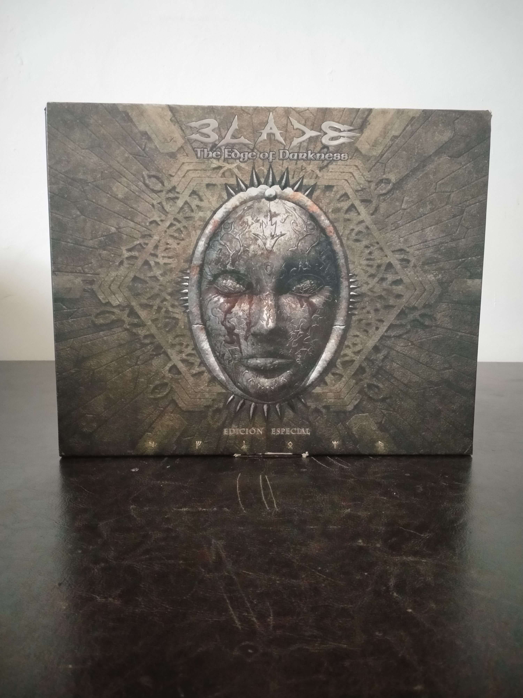

Ficha #000000
Blade: The Edge of Darkness - Edición Especial
Blade: The Edge of Darkness es un videojuego de acción en tercera persona desarrollado por el estudio español Rebel Act Studios y publicado por Codemasters en 2001. Ambientado en un mundo de fantasía oscura, permite elegir entre cuatro personajes con atributos, armas y estilos de combate diferenciados, y centra su diseño en enfrentamientos cuerpo a cuerpo exigentes, bloqueo, esquiva, combos y desmembramiento de enemigos. El título destacó técnicamente por su motor 3D, el uso avanzado de iluminación y sombras dinámicas en tiempo real, superficies reflectantes y transparentes, físicas aplicadas a objetos del escenario y elementos destructibles. Conocido en algunos mercados como Severance: Blade of Darkness, se convirtió en una obra de culto del PC europeo y en uno de los desarrollos españoles más ambiciosos de comienzos de los años 2000. Esta Edición Especial en caja grande añade valor documental y coleccionista al lanzamiento físico original.
- Formato
- Big Box
- Plataforma
- Win95 Win98 WinMe Win2000
- Género
- Acción en tercera persona Aventura de acción Hack and slash Fantasía oscura
- Serie
- Todos Big Box
- Desarrollador
- Rebel Act Studios
- Distribuidor
- Codemasters
- EAN
- —
Contenido de la edición
- Caja exterior Big Box
- CD-ROM
- Estuche plástico del juego
- Manual del usuario
- Póster desplegable
- Certificado de Edición Especial
Preservación
- Protección
- No determinado
- Formato recomendado
- CCD/IMG/SUB
- Jugable en virtualización
- Sí
No se dispone de evidencia suficiente para identificar con seguridad el sistema anticopia de esta edición. Para preservación se recomienda realizar una imagen completa del CD-ROM con un formato que conserve la estructura del disco y posibles datos de protección, además de digitalizar el manual, el póster y el certificado de la Edición Especial. La ejecución es viable en entornos Windows clásicos o mediante soluciones modernas de compatibilidad, aunque puede requerir ajustes de aceleración 3D.